摄影前世今生
- 摄影术的诞生
- 新艺术的诞生
- 叛逆与新生
1826年约瑟夫·尼埃普斯:《窗外》
1826年的一天，尼埃普斯在房子顶楼的工作室里，拍摄了世界上第一张永久保存的照片。他当时的制作工艺是在白蜡板上敷上一层薄沥青，然后利用阳光和原始镜头，拍摄下窗外的景色，曝光时间长达八小时，再经过熏衣草油的冲洗，才获得了人类拍摄的第一张照片,尼埃普斯把他这种用日光将影像永久的记录在玻璃和金属板上的摄影方法，称作“日光蚀刻法”，又称阳光摄影法,这幅照片最后一次公开展览的时间为1898年，此后一度销声匿迹，直至1952年才重新面世
1838年路易斯·达盖尔:《巴黎寺院街》
他用感光过的镀银铜板，浸泡在加热的盐水中获得定影而完成了自己的“达盖尔法”。他的作品世存很少，《巴黎寺院街》是他在1838年摄制的。由于曝光时间要长达数分钟之久，因此很难留下人的行迹和身影。达盖尔因银版法成为举世公认的摄影术发明人。银版法作为一种实用可行的摄影方法，虽然价格昂贵，但影像质量极为精细， 自公布于世，便迅速在欧美应用，直到19世纪50年代的胶棉湿版工艺出现之前，一直是最主要的摄影技法。
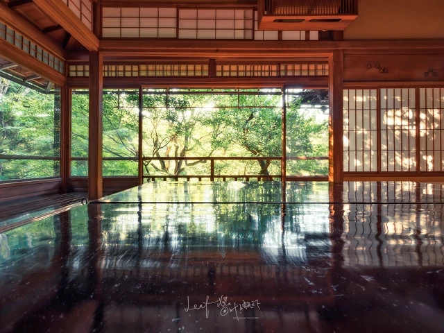 1850年杜冈·马克西姆《阿布·辛拜勒神庙》
从画面上看，一个蒙面的埃及向导正坐在拉美西斯二世巨大的石像上，而石像尚未完全出土。出土后的石像高达二十米，极其雄伟壮观。杜冈当时拍摄这幅画面可能只是出于记录，并以人做对比显示石像的高大，但这张照片却被后人在摄影史上常常引用，并产生无尽遐想。蒙面的埃及向导在石像上停留是短暂的，却高高在上，石像伫立在神庙前是永恒的，却木然地任凭向导端坐其上。有人说这或许可被视为摄影术辉煌成功的象征，因为摄影是瞬间的艺术，而传统艺术总与永久相伴随
达人推荐
- Reuven Halevi
- Salvador Cueva
- 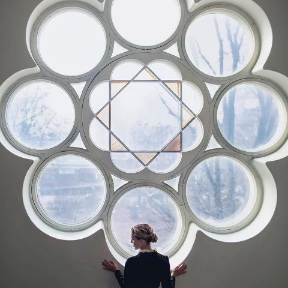Light
- 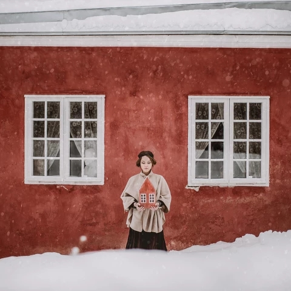Porvoo
- 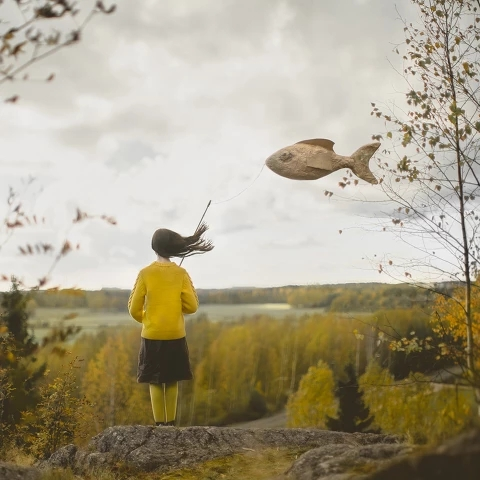Dash
- 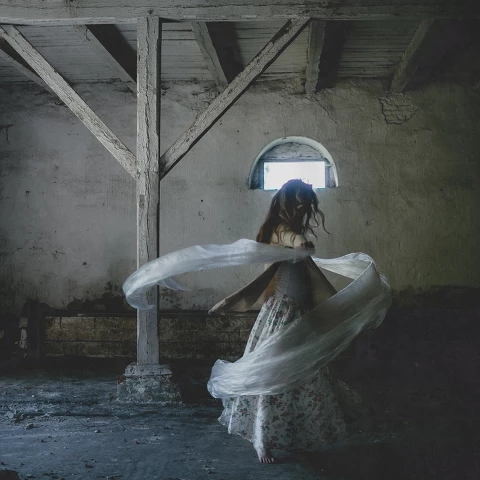Dance
- Pear
- 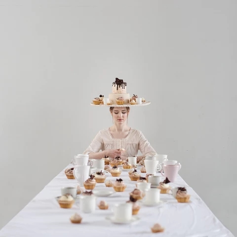Taste
器材展示
- 相机
- 配件
- 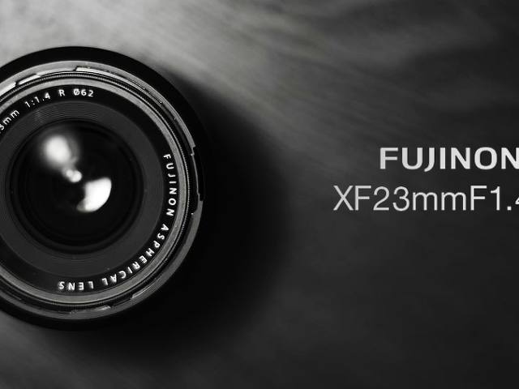富士笔记,与23毫米的相爱相杀
- 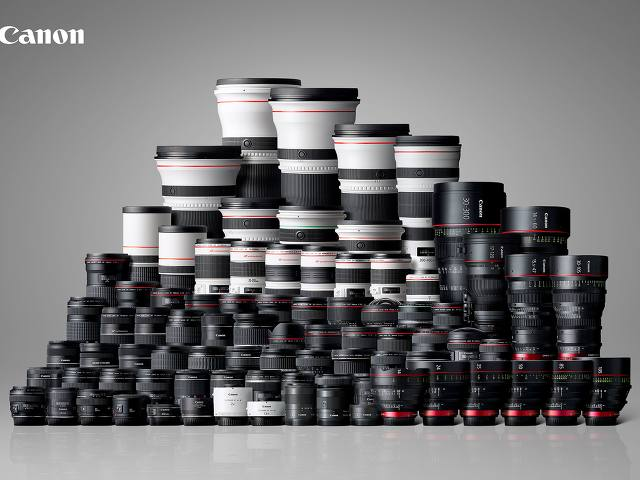玩摄影，为什么要凑齐三大元
- 灯泡镜头轻量化滤镜系统解决方案
- 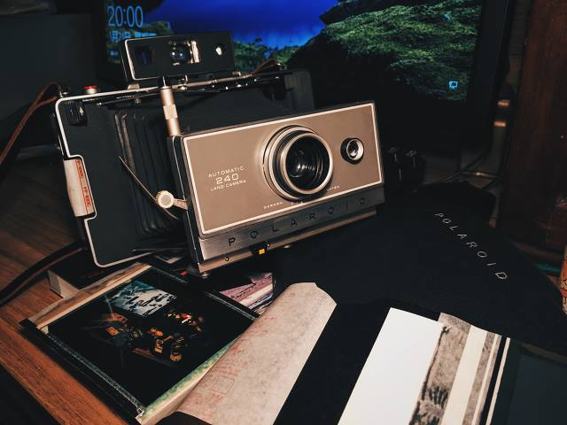宝丽来Polaroid 240卡纸问题分析
- 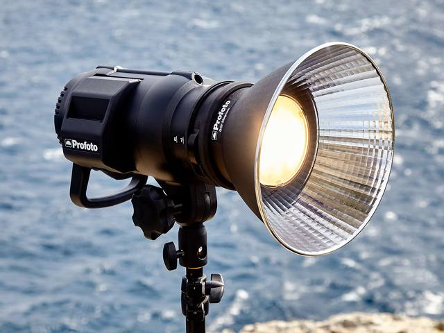如果让我选一个最爱的塑光配件
- 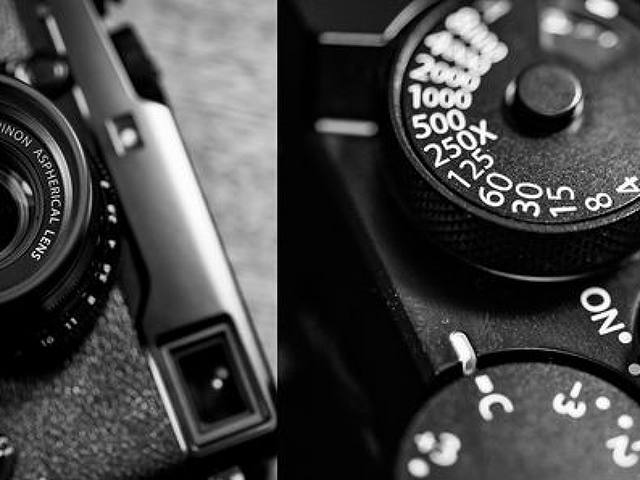FUJIFILM 富士 X-Pro2
风格标签
- 色彩
- 抓拍
- 路上行人
- 夜巷
- 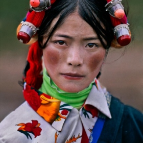藏族女孩
- 灯塔
- 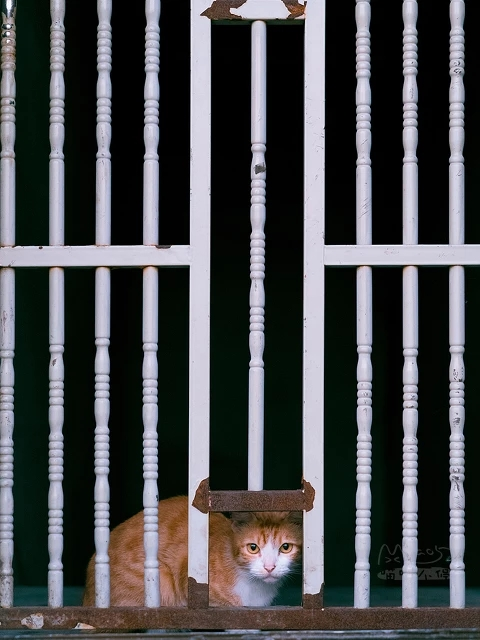卡住的猫
- 正青春